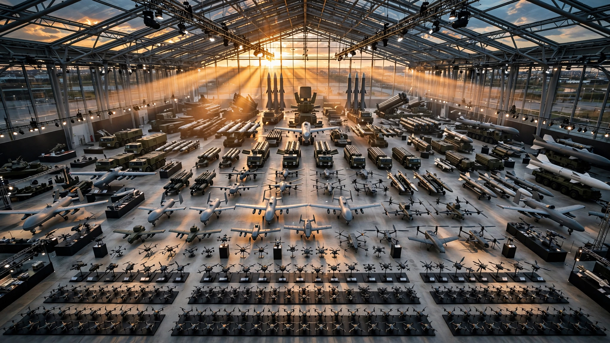

It Costs $4 Million to Shoot Down a $35,000 Drone. Farnborough Just Revealed Seven Ways to Fix That.
The counter-drone cost exchange ratio spans 2,000:1. A complete tier-by-tier analysis of every interceptor system on display — and the annual defense budget nobody has calculated.

One hundred to one. That is the cost exchange ratio when a $4 million PAC-3 MSE Patriot interceptor destroys a Shahed-136 drone that cost $35,000 to build. The defender spends 114 times more than the attacker. Scale that to a sustained campaign — Russia launching 1,500 Shaheds per month, which is roughly what its Yelabuga and Iranian production lines can sustain — and the defender burns through $6 billion a month in Patriot missiles alone. The attacker spends $52.5 million.
That arithmetic, which the Global Taiwan Institute described as "a clear 100:1 ratio in favor of Russia," is the single most important number in modern defense. It explains why Ukraine cannot buy enough interceptors, why the Gulf states are shopping for Ukrainian drones instead of American missiles, and why half of Farnborough's record 1,600 exhibitors this year are defense companies.
The Farnborough International Airshow opened Monday in Hampshire with the largest defense presence in its 78-year history. For the first time, every tier of counter-drone technology — from a $2,000 Ukrainian kamikaze quadcopter to a reusable microwave weapon that claims 50 kills per flight — is on display simultaneously. What nobody at the show floor has done is line them all up and run the math.
The Ladder
Seven distinct counter-drone solutions, each targeting a different point on the cost-versus-capability curve, are now either deployed in combat or in advanced demonstration. We mapped each one by cost per kill, speed, reusability, and readiness. The results are not what the trade press has reported.
Tier 1: The $2,000 Interceptor ($2,000 per kill)
Ukraine's cheapest answer to the Shahed problem is also its most effective per dollar. General Cherry's Bullet interceptor — a 3D-printed plastic dome containing a brick of explosive, powered by four small propellers — costs roughly $2,000 per unit. It is a kamikaze: one drone, one kill, one wreck. Since November 2025, the Bullet has destroyed more than 1,000 Russian Shaheds, according to General Cherry spokesperson Marko Kushnir.
The cost exchange ratio at this tier: 1:17.5 in favor of the defender. For every $2,000 interceptor expended, the attacker loses $35,000. That is the opposite of the Patriot problem, and it is why Gulf states including the UAE, Qatar, Kuwait, and Saudi Arabia are now seeking to purchase Ukrainian low-cost interceptor drones rather than American Patriot systems.
The catch is speed. The Bullet maxes out at 310 kilometers per hour. The newest jet-powered Shahed variants reach 500. General Cherry is developing a faster version targeting 400–500 kph, with front-line testing planned for August and mass production in September. Whether it can be powered by electricity or will require a small turbojet, which would raise costs, remains unresolved.
Tier 2: The Mass-Production Interceptor ($3,000–$5,000 per kill)
SkyFall, a major Ukrainian drone manufacturer, unveiled its P1-SUN Jetkiller at Farnborough on Monday — a faster variant of the interceptor that has become Ukraine's workhorse. The original P1-SUN has hit more than 5,500 Shaheds since its launch in November 2025. SkyFall says it has the capacity to produce 50,000 units per month.
Fifty thousand. Per month. To understand why that number matters, consider the production asymmetry it creates. Russia's Yelabuga factory in Tatarstan was designed to produce 6,000 Geran-2 drones per year, approximately 500 per month. Iran's HESA facilities in Isfahan produce an estimated 150–250 units per month across variants. Combined peak production: roughly 750 Shaheds per month. SkyFall alone can produce interceptors at 67 times that rate.
The new Jetkiller variant reaches 370 kph, up from the original's 310, but still short of the 500 kph jet-powered Shaheds that now constitute 15–20% of Russia's fleet, according to Ukrainian Air Force senior commander Yuriy Cherevashenko. The remaining 80–85% are propeller-powered and well within intercept range.
Tier 3: The Guided Munition ($27,000 per kill)
The Advanced Precision Kill Weapon System, or APKWS, sits in the middle of the ladder. Built by BAE Systems, Northrop Grumman, and General Dynamics, it is a 70mm Hydra rocket fitted with a laser guidance kit and proximity fuze. At approximately $27,000 per round, the cost exchange ratio against a $35,000 Shahed is approximately 1:1.3 — the defender still spends less than the attacker, but only barely. Against the cheapest mass-production Shahed variants, which the Center for Strategic and International Studies estimates at as low as $10,000 per unit in high-volume runs, the economics tip unfavorable: 2.7:1 against the defender.
APKWS is a known quantity. It has been tested at Yuma Proving Ground alongside other counter-UAS systems, and it is currently used by US forces. Its limitation is that it is a kinetic, one-shot munition. One rocket, one kill, one cost.
Tier 4: The Microwave Multiplier (Amortized: ~$200–$800 per kill)
This is where the math breaks. Lockheed Martin's MORFIUS X-Rotor, unveiled at Farnborough, is a reusable airborne high-power microwave system that claims to deliver more than 50 drone kills per flight. It weighs less than 30 pounds, fits inside a six-inch diameter launch tube, and emits roughly a gigawatt of microwave power — a million times the output of a kitchen microwave — at close range to fry the electronics of hostile drones in mid-flight. Then it flies home. And does it again.
Lockheed has not disclosed a unit cost. But reusability transforms the economics entirely, so we can bound it. If MORFIUS costs $100,000 per unit — a plausible estimate for a sophisticated reusable military drone — and achieves 50 kills per flight across 20 flights before requiring major maintenance or replacement, the amortized cost per kill is $100. At the more conservative assumption of 10 flights and 50 kills each, the cost per kill is $200. At 5 flights and 30 kills each: $667.
Even the pessimistic scenario produces a cost exchange ratio of roughly 52:1 in favor of the defender — better than the best-case Patriot scenario by a factor of nearly 6,000.
MORFIUS has been in development since at least 2017. Previous variants have flown, and the system has been tested at multiple US locations. The X-Rotor configuration is new, optimized for ground launch and field reusability without dependence on fire control radars. The critical question Lockheed has not answered is whether MORFIUS can engage the hardened Shahed-238 jet variants, whose shielded electronics may be more resistant to microwave attack than the commercial-off-the-shelf components in earlier Shahed-136 models.
Tier 5: The European Sovereign Solution (Cost unknown, available 2028)
MBDA, Europe's largest missile manufacturer, used Farnborough to announce its Counter Mass Interceptor. The positioning was blunt: "Today in Europe, there is no sovereign system capable of addressing saturation," an MBDA representative told Reuters. "If we want to address this threat, we are forced to rely on non-European systems, whether American, Israeli or others."
The first interceptor targets smaller drones. A planned second variant will address longer-range threats including rockets, gliding bombs, and subsonic missiles. Development is led by MBDA's British teams, with French leadership on subsequent iterations. An initial version will be available as early as 2028.
Separately, British startup Greenjets raised £34 million and was selected for the LEAP initiative — a five-nation program (UK, France, Germany, Italy, Poland) to develop low-cost effectors and autonomous platforms. Greenjets' electric propulsion system delivers what it calls "jet-power performance at electric prices," and its technology contains no US-made components, a deliberate choice for sovereign supply chain independence. Demonstration trials begin later this year.
Tier 6: The Affordable Missile (~$2 million per kill)
Lockheed's PAC-3 Adapted Capability Effector, or ACE, announced Monday at Farnborough, costs less than half of the PAC-3 MSE — placing it under $2 million per missile. It targets aircraft, cruise missiles, and short- to intermediate-range ballistic missiles. Tim Cahill, president of Lockheed Martin Missiles and Fire Control, was explicit: "This missile isn't designed to go after drones." ACE bridges the gap between low-cost drone interceptors and the PAC-3 MSE, but it is a cruise-missile and aircraft killer, not a Shahed solution. Initial production begins in 2028.
Tier 7: The Gold Standard ($4 million per kill)
The PAC-3 MSE remains the premium interceptor. At roughly $4 million per missile, its hit-to-kill technology — direct kinetic impact rather than explosive warhead — is designed for the most sophisticated threats: advanced ballistic missiles, maneuvering reentry vehicles, and cruise missiles. Using it against a $35,000 drone is like using a Ferrari to chase a bicycle. It works. It is also insane.
The Annual Budget Nobody Has Run
Here is the calculation. Russia's combined Shahed production capacity, including Yelabuga and Iranian HESA facilities, can sustain approximately 750 units per month at current levels. Some of these go to the Iran theater; most go to Ukraine. Assume 1,000 Shaheds per month are directed at Ukrainian targets — conservative given reports that Russia launches "thousands per month" and fired 5,500 at Ukraine between November 2025 and July 2026 through SkyFall intercepts alone.
| Interceptor System | Cost Per Kill | Monthly Cost (1,000 Shaheds) | Annual Cost | Exchange Ratio |
|---|---|---|---|---|
| Bullet / Sting (Ukrainian FPV) | $2,000 | $2M | $24M | 17.5:1 defender |
| SkyFall P1-SUN | ~$4,000 | $4M | $48M | 8.75:1 defender |
| APKWS | $27,000 | $27M | $324M | 1.3:1 defender |
| MORFIUS X-Rotor (est.) | ~$200–$800 | $0.2–$0.8M | $2.4–$9.6M | 44–175:1 defender |
| PAC-3 ACE | ~$2,000,000 | $2B | $24B | 57:1 attacker |
| PAC-3 MSE | $4,000,000 | $4B | $48B | 114:1 attacker |
The spread is staggering. Defending against 1,000 Shaheds per month costs between $2.4 million per year (MORFIUS, optimistic estimate) and $48 billion per year (PAC-3 MSE). That is a 20,000:1 range across the interceptor ladder. The entire annual US defense budget for procurement is roughly $170 billion. Using Patriot missiles to defend against Shaheds would consume 28% of it.
The attacker's cost for those same 1,000 Shaheds per month: approximately $420 million per year, using CSIS's $35,000-per-unit estimate. Against Ukrainian FPV interceptors, the attacker is losing money — destroying $24 million in interceptors while spending $420 million on drones. Against Patriot missiles, the attacker is printing it.
The Jet Problem
The cost ladder has a speed ceiling. Ukraine's cheapest interceptors — the ones that make the economics work — cannot catch the newest threat. Jet-powered Shahed-238 variants reach 500 kph, outrunning the Bullet (310 kph), the P1-SUN (370 kph), and even the upgraded P1-SUN Jetkiller. General Cherry's faster Bullet prototype aims for 400–500 kph but is still in development, and adding a turbojet engine to reach those speeds may push the cost above the $2,000 sweet spot that makes the economics favorable.
Russia knows this. The proportion of jet-powered Shaheds has increased sharply in recent months, from negligible to 15–20% of the total fleet. If that proportion continues to rise — and the Shahed-238's production cost of $70,000–$100,000 still makes it far cheaper than any missile interceptor — the defender's low-cost tier becomes increasingly irrelevant for the highest-speed threats.
MORFIUS may solve this, since microwave weapons are speed-agnostic: they attack electronics, not airframes, and the microwave pulse travels at the speed of light. But MORFIUS is not yet in production, and its effectiveness against shielded or hardened electronics is unproven in operational conditions.
The Strongest Counter
The strongest case against reading this cost ladder as a strategic roadmap is that it treats each engagement as an isolated transaction: one interceptor, one drone, one cost. Real air defense does not work that way. Layered defense requires simultaneous operation of radar networks, command-and-control infrastructure, operator training, logistics chains, maintenance crews, and stockpile management — none of which appear in a cost-per-kill calculation. A $2,000 interceptor drone operated by a three-person crew in the field, with a window of minutes from radar detection to engagement, has an operational cost structure far higher than the $2,000 sticker price suggests. SkyFall's claim of 5,500 kills since November cannot be independently verified, and the 50,000-units-per-month production capacity has not been confirmed by third parties.
The MORFIUS cost estimate is entirely hypothetical. Lockheed has disclosed neither unit cost nor operational cost, and the 50-kills-per-flight claim comes from a manufacturer press release, not independent testing. Reusable military systems have a long history of promised cost savings that evaporate in the field — the F-35 was supposed to be a low-cost fighter, and the Space Shuttle was supposed to reduce per-launch costs by an order of magnitude. Neither delivered on the promise. There is no reason to assume MORFIUS will be different until operational data proves otherwise.
Finally, the cost exchange ratio framework assumes the attacker's only purpose is to destroy the interceptor. Shaheds also serve as reconnaissance platforms, air-defense-saturation tools, and psychological weapons — Russia's drone campaign has forced Ukraine to divert hundreds of drone crews from the front line and has, according to the UN, transformed civilian life near the front into something residents describe as a "human safari." The June 2026 civilian death toll was the highest since April 2022. The cost-per-kill metric captures the economics. It does not capture the terror.
Limitations
This analysis uses publicly available cost estimates that vary significantly by source. Shahed unit costs range from $10,000 (mass production floor) to $80,000 (upgraded variants, Wikipedia citing April 2024 data) to $100,000 (Shahed-238, Quwa). We used the CSIS midpoint of $35,000 for the standard propeller-driven variant. MORFIUS's amortized cost is bounded by assumption, not disclosed data. SkyFall and General Cherry kill claims are manufacturer-reported and unverified by Reuters or independent sources. The 1,000-Shaheds-per-month baseline is a modeling assumption; actual monthly launch volumes fluctuate and are not comprehensively tracked in open-source data. Production capacity at Yelabuga and HESA facilities is estimated from satellite imagery and leaked documents, not confirmed by official sources. The APKWS cost of $27,000 per round is based on publicly available US procurement data and may not reflect current pricing.
The Bottom Line
Farnborough 2026 is the airshow where the counter-drone problem stopped being about whether cheap drones can beat expensive missiles — everyone already knew the answer — and started being about which rung of the cost ladder a given military can afford to stand on. Ukraine, which cannot afford Patriot missiles, invented the $2,000 interceptor drone and proved it works at scale: more than 6,500 confirmed kills across two manufacturers since November 2025, at a combined cost of roughly $20 million. Europe, which has no sovereign counter-saturation system, just announced three separate programs to build one. And Lockheed, which sells the $4 million missile that defined the old cost exchange ratio, showed up with a $100,000 reusable microwave drone that may erase it entirely.
If you work in defense procurement, the number to remember is not any individual cost-per-kill figure. It is the 20,000:1 range across the ladder — the difference between $2.4 million and $48 billion to solve the same problem for one year. That range is where the strategic decision actually lives, and as of Monday, every country at Farnborough is staring at it.